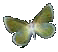

Jeg har drømt våket bedt grått søkt meg inn til synet av ryggen da han snudde og gikk
Han var ikke perfekt.  Jeg var fryktelig stolt. Ikke et ord i møte.
Lettere å leve med om han hadde overlevd sin ungdom.
Syrinene s k r i k er, fulle av nektar, Sommerfuglen f l y r vilt.